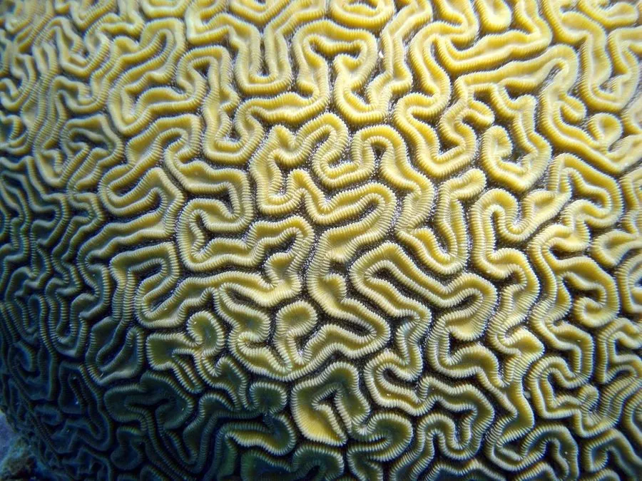

其他无脊椎动物 · 动物界
脑珊瑚 Diploria labyrinthiformis

群体表面有迷宫状沟纹的常见大型造礁珊瑚，形似大脑，分布于加勒比海等海域，对珊瑚白化和疾病较敏感。
- 分类
- 门刺胞动物门纲珊瑚纲目石珊瑚目科蜂巢珊瑚科属脑珊瑚属
- 栖息环境
- 加勒比海珊瑚礁的礁坪与礁坡，水质清澈、光照适中
- 地理分布
- 加勒比海和西大西洋热带海域，如巴哈马、佛罗里达
- 保护级别
- 暂无评估；加勒比海珊瑚礁整体退化
物种志
脑珊瑚的群体呈半球形或团块状，直径可达 1 m 以上，表面有迷宫般弯曲的沟纹，颜色多为黄褐、灰褐或绿褐色，沟纹之间是排列紧密的水螅体，整体看上去非常像大脑。
它生活在加勒比海的珊瑚礁区，从浅水礁坪到较深水域都有分布，喜欢光照适中、水质清澈的环境。脑珊瑚生长缓慢，群体可以长到数百年，是珊瑚礁中寿命较长的造礁珊瑚之一。它同样依赖虫黄藻提供营养，对海水升温和疾病较为敏感，近几十年加勒比海珊瑚礁退化使脑珊瑚的覆盖度明显下降。保护珊瑚礁需要减少碳排放、控制污染和限制破坏性捕捞。脑珊瑚的骨骼生长纹层还能记录数百年来的海洋环境变化。
形态与习性
- 食性靠虫黄藻光合作用供能，也捕食浮游生物
- 形态群体呈半球形，表面有迷宫状沟纹
- 体型群体直径可达 1 m 以上
- 生长生长缓慢，群体可存活数百年
- 分布加勒比海和西大西洋热带海域
- 威胁海水升温、疾病和污染导致覆盖度下降
趣味知识
- 脑珊瑚表面的迷宫状沟纹，是无数水螅体共同排列形成的。
- 它的群体可以生长数百年，是珊瑚礁里的长寿居民。
- 加勒比海的珊瑚疾病和热浪，曾造成大量脑珊瑚死亡。